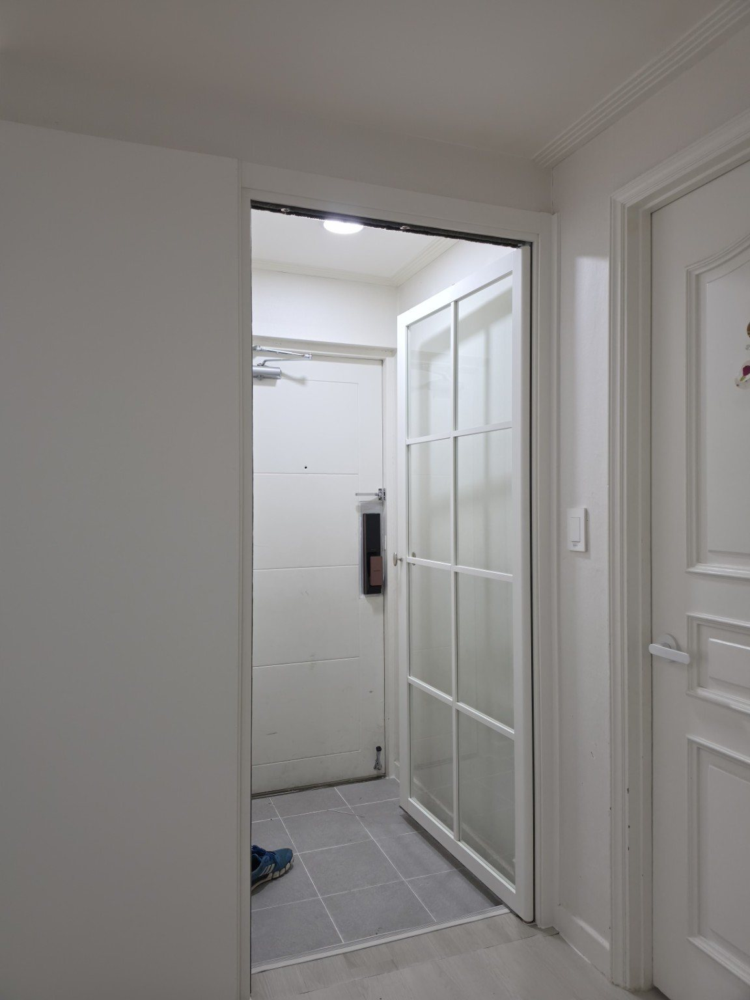
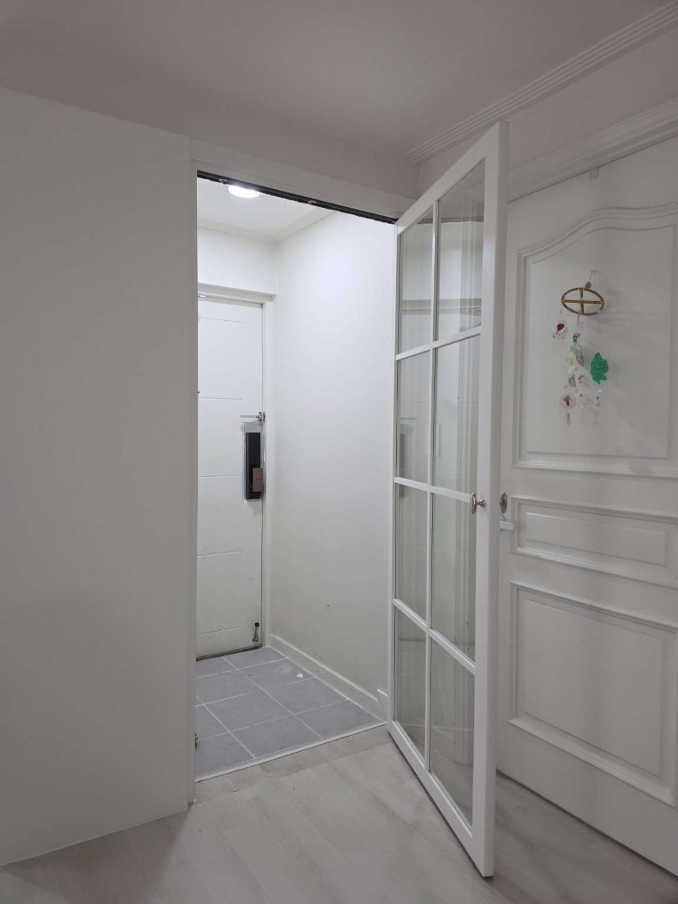
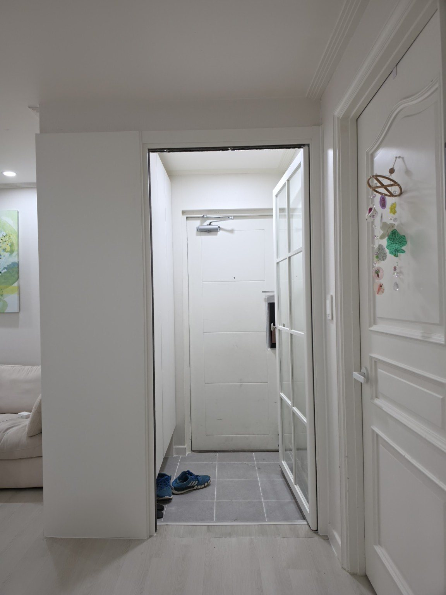
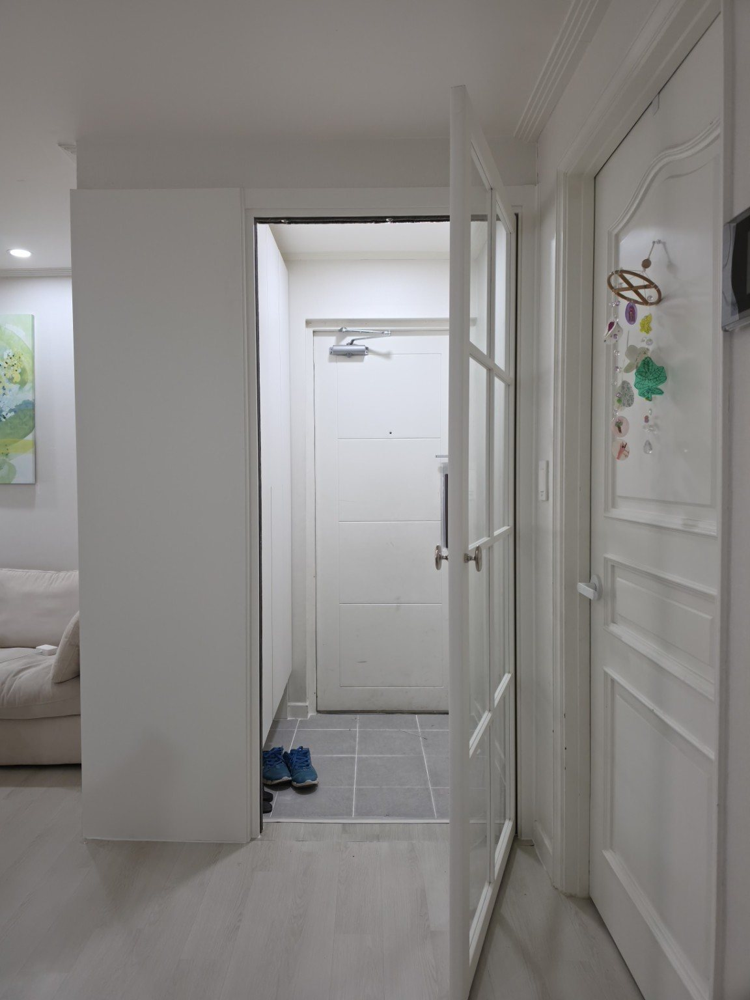
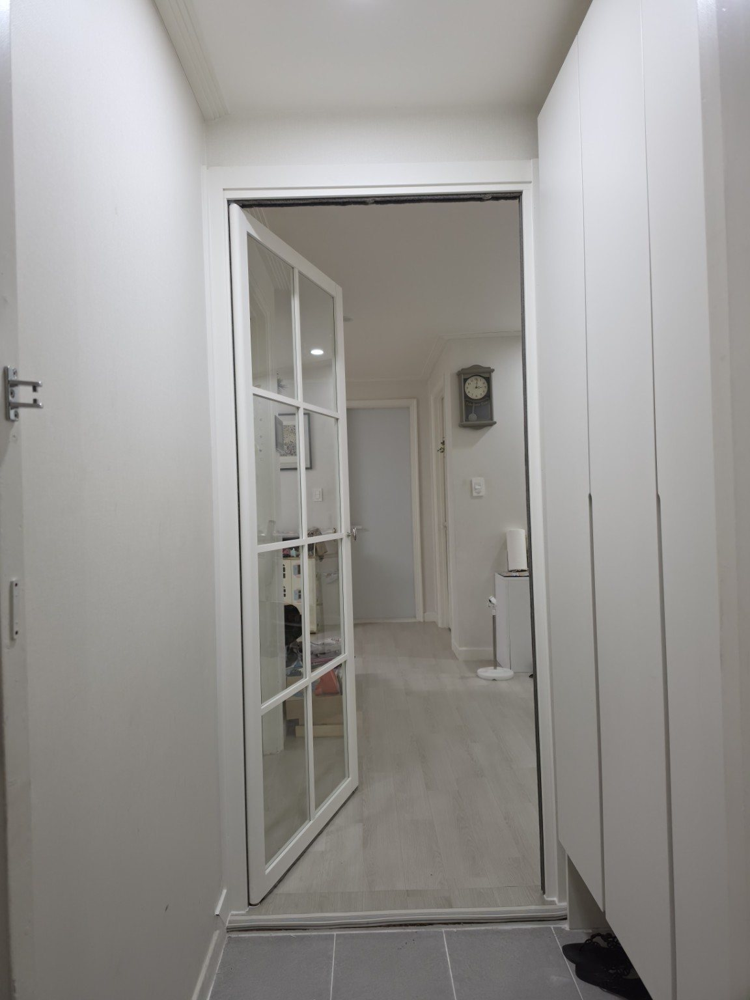
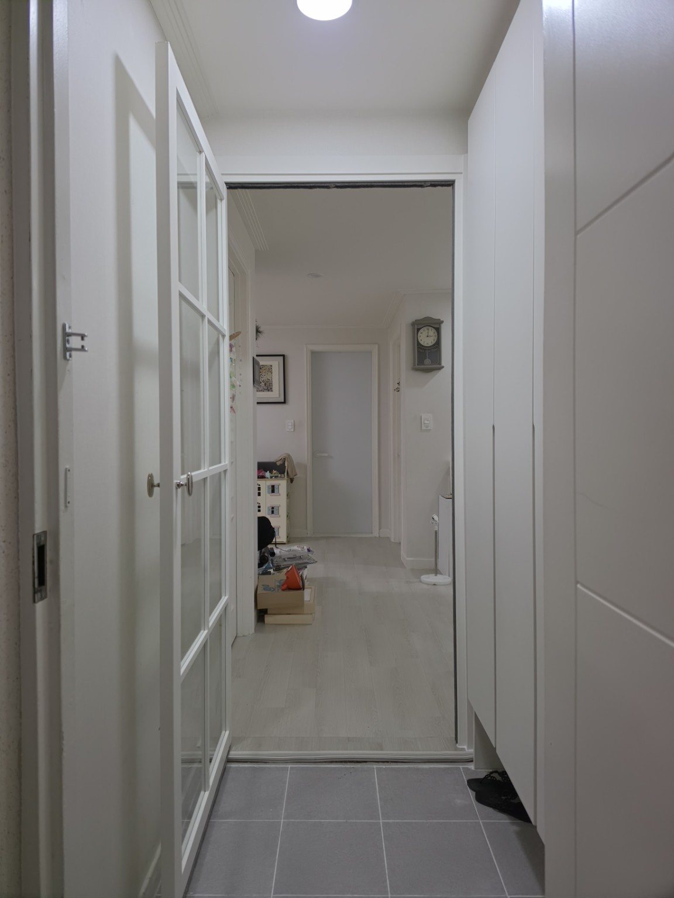

서울 옥수극동아파트 18평
양방향 유압 여닫이 현관중문 시공
서울 성동구 옥수극동아파트 6동 18평 아파트에서 진행한 현관중문 맞춤 시공 사례입니다.
시공지역 : 서울특별시 성동구
아파트 : 옥수극동아파트 6동
평형 : 18평
시공제품 : 양방향 유압 여닫이 현관중문
프레임 : 화이트 프레임
추가시공 : 현관 좌측 약 550mm 가벽 설치

옥수극동아파트 18평 현관중문 시공
이번 현장은 서울 성동구 옥수극동아파트 6동의 18평 아파트입니다.
기존 현관 구조에서는 중문을 바로 설치하기 어려워 현관 좌측에 약 550mm 폭의 가벽을 먼저 설치했습니다. 가벽을 이용해 중문이 안정적으로 설치될 수 있는 공간과 문틀 위치를 확보한 뒤 현관중문 시공을 진행했습니다.
약 550mm 가벽을 설치한 이유
현관중문은 단순히 문만 설치하는 것이 아니라 기존 현관의 폭과 벽체 위치, 출입 동선 등을 함께 고려해야 합니다. 이번 현장은 좌측 공간을 보완하기 위해 약 550mm의 가벽을 설치하여 중문을 설치하기 좋은 구조를 만들었습니다.
현관 구조에 맞춘 약 550mm 가벽 설치와 양방향으로 사용할 수 있는 유압 여닫이 중문을 함께 시공한 사례입니다.
양방향 유압 여닫이 중문
이번 현장에는 양방향으로 열고 사용할 수 있는 유압 여닫이 방식의 현관중문을 적용했습니다. 현관에서 실내 방향으로 들어올 때와 실내에서 현관으로 나갈 때 출입 동선에 맞춰 편리하게 사용할 수 있도록 구성했습니다.
화이트 프레임과 넓은 유리 면을 적용하여 기존 아파트의 밝은 화이트 인테리어와 자연스럽게 어울리도록 했습니다. 중문을 닫은 상태에서도 현관 쪽의 밝은 느낌과 시각적인 개방감을 유지할 수 있도록 시공했습니다.
시공 사진






문다라 현관중문 맞춤 시공
아파트마다 현관의 폭, 벽체 위치와 출입 동선이 다르기 때문에 현장 구조에 맞는 중문 방식과 설치 위치를 정하는 것이 중요합니다.
문다라는 현관 구조를 확인한 뒤 필요한 경우 가벽 설치와 중문 시공을 함께 진행하여 공간에 맞는 현관중문을 시공합니다.
옥수극동아파트 현관중문 자주 묻는 질문
Q. 현관에 중문을 바로 설치하기 어려우면 가벽을 설치할 수 있나요?
A. 현장 구조에 따라 가능합니다. 이번 옥수극동아파트 18평 현장은 좌측에 약 550mm 가벽을 설치해 중문을 설치할 공간과 위치를 확보한 뒤 시공했습니다.
Q. 양방향 유압 여닫이 중문은 어떻게 사용하나요?
A. 현관에서 실내로 들어올 때와 실내에서 현관으로 나갈 때 양쪽 방향으로 문을 열 수 있는 방식입니다. 실제 적용 가능 여부는 현관 폭과 주변 구조를 확인해 결정합니다.
Q. 작은 평형의 아파트에도 유리 중문을 설치할 수 있나요?
A. 평형만으로 결정하지 않고 현관의 실제 폭과 동선을 확인해야 합니다. 이번 18평 현장처럼 가벽과 유리 중문을 함께 구성하는 방법도 있습니다.